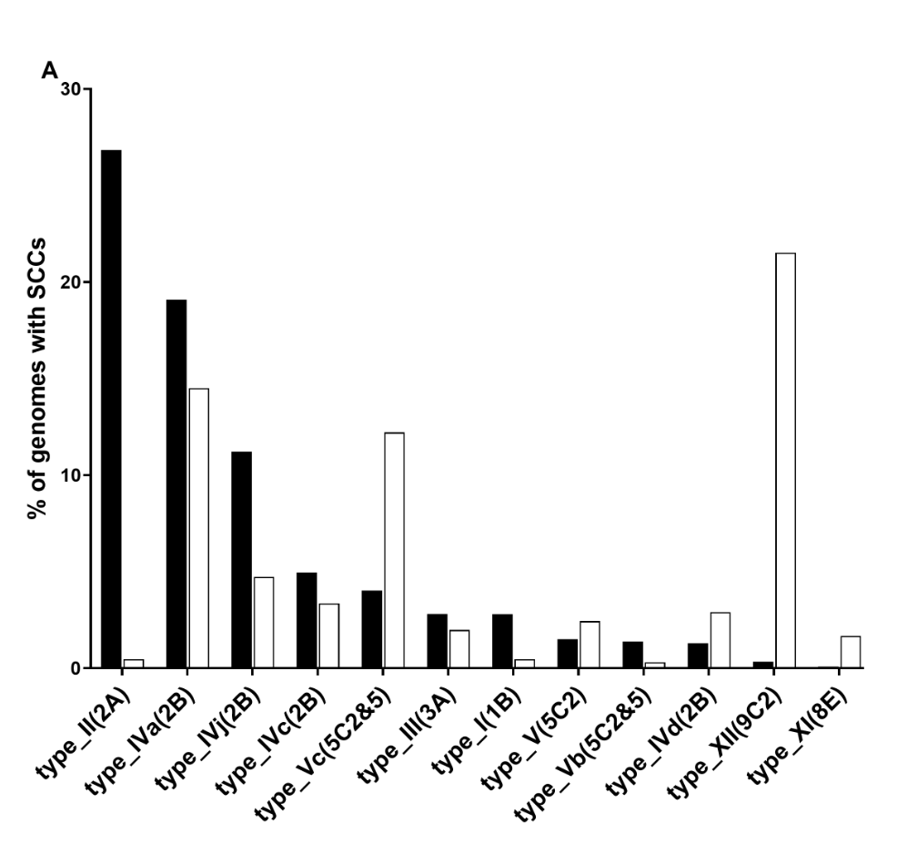
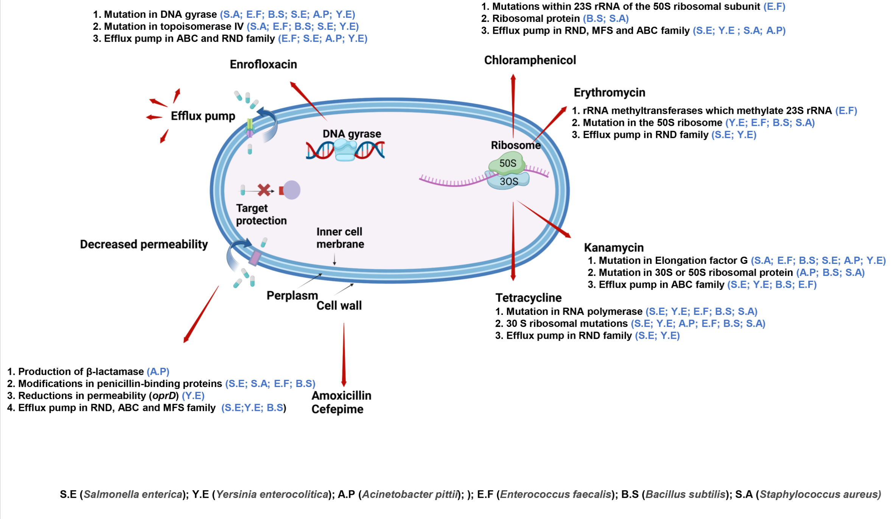

What I read - 100225
What I've been Reading - 15-02-25
Introduction highlighting the subject of the papers.
The interplay between mobilome and resistome in Staphylococcus aureus
Paper: Contarin R, Drapeau A, François P, Madec J, Haenni M, Dordet-Frisoni E.2024.The interplay between mobilome and resistome in Staphylococcus aureus. mBio15:e02428-24. https://doi.org/10.1128/mbio.02428-24
Take Home:
This study investigates the relationship between mobile genetic elements (MGEs) and antibiotic resistance genes (ARGs) in Staphylococcus aureus by analysing over 10,000 genomes from both human and animal sources. Key findings include:
- Diversity of MGEs and ARGs: A remarkable variety of MGEs (e.g., plasmids and transposons) were identified as key carriers of ARGs.
- MGE/ARG Associations: Numerous associations were found, indicating MGEs are crucial for the horizontal transfer and dissemination of resistance genes.
- Cross-Species Spread: High similarity in MGE/ARG associations between human and animal isolates highlights the potential for ARGs to spread freely between hosts.
- Spread Across Strains: MGEs and their associated ARGs can spread between different sequence types (STs), facilitating the evolution and adaptation of S. aureus clones in selective environments.
- Variability Within STs: The variability of MGE/ARG associations within individual STs underscores the dynamic role of MGEs in shaping resistance profiles.
Overall, the study emphasizes the importance of understanding MGE-mediated ARG transfer to address the emergence of multidrug-resistant S. aureus clones in both human and animal health.
Key Figure**:
Ensure to cite properly and give a good legend

My thoughts:
Interesting to note that SCCmec Type XII is the most prominent SCCmec found in the animal isolates of SA.
Type XIII-XV are missing. They authors used SCCmecFinder and the following are missing from that database: Type XIII (MG674089), Type XIV (LC440647) and Type XV (CP080249). It is also not clear from SCCmecFinder what the extended database includes.
Investigating this I happened to come across sccmec which appears to be a SCCmec typing tool that includes the current Types (Type I-XV). If you are interested in SCCmec typing then I recommend having a look: https://github.com/rpetit3/sccmec.
De novo acquisition of antibiotic resistance in six species of bacteria
Paper: Wang X, Koster AD, Koenders BB, Jonker M, Brul S,ter Kuile BH.0.De novo acquisition of antibiotic resistance in six species of bacteria. Microbiol Spectr0:e01785-24. https://doi.org/10.1128/spectrum.01785-24
Take Home:
- Introduction:
- Two methods of acquiring resistance
- Acquisition of resistance genes through horizontal gene transfer
- de novo development of resistance
- 6 bacterial species found in the food chain exposed to increasing sublethal doses of antibiotics
- Species examined: Salmonella enterica subspecies. houtenae, Yersinia enterocolitica, Staphylococcus aureus, Enterococcus faecalis, Bacillus subtilis and Acinetobacter pittii.
- Antibiotics tested: Amoxicillin or Cefepime (Gram-negative or Gram-positive respectively), Enrofloxacin, Kanamycin, Tetracycline, Erythromycin and Chloramphenicol.
- Experiment duration: between 20 and 50 days.
- Whole genome sequencing was carried out at two time points during the experiment
- Middle and end point, which correspond to
- To attain information on mutations that lead the phenotypic changes
- Two methods of acquiring resistance
- Findings:
- All 6 isolates could develop high levels of resistance
- Resistance for each bacterium-antibiotic combinations occurs with different mutations
- Number of mutations varies, they found Yersinia enterocolitica had the most
- A mutational pattern of gyrA combined with parC was conserved in 5 out of 6 species with relation to fluoroquinolone resistance
- Mutations in genes coding for effluent pumps are widely encountered in Gram-negative species
- Conclusion:
- Diverse genetic changes can lead to similar phenotypic outcomes.
Key Figures:

My thoughts:
I liked that the authors also examined the fitness cost of resistance acquisition and it was interesting to see that Y. enterocolitica had extreme fitness cost due to the large number of mutations it had acquired. The authors note that only 8-20% of the mutations observed at the first time point (middle of the experiment) were maintained at the end. This suggests that more beneficial mutations are acquired and retained over time.